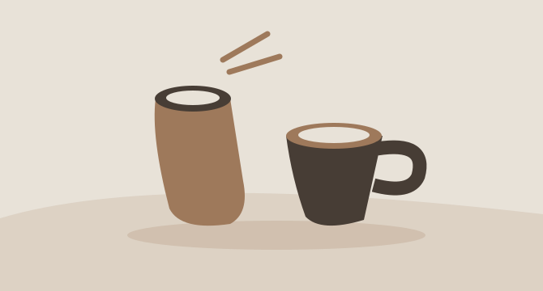
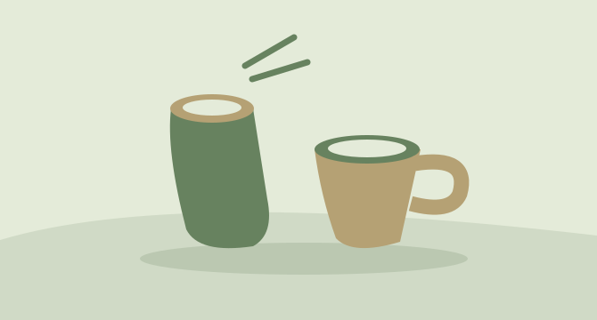

fieldwork
Spend your weekend
with a new perspective.
Book thoughtful experiences with independent studios across Seoul.
Made for your weekend
4 experiences

Seongsu / Craft
Clay & conversation: hand-built ceramics with local makers
4.9 / 5
KRW 58,000

Yeonnam / Food
A slow morning: coffee tasting in a working roastery
4.8 / 5
KRW 42,000

Mangwon / Nature
Botanical walks and seasonal flower arranging
4.9 / 5
KRW 64,000
Euljiro / Craft
Make your own screen-printed art edition
4.7 / 5
KRW 52,000